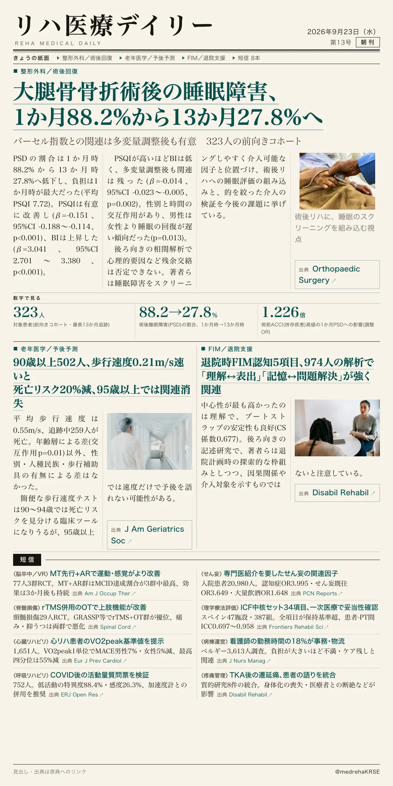
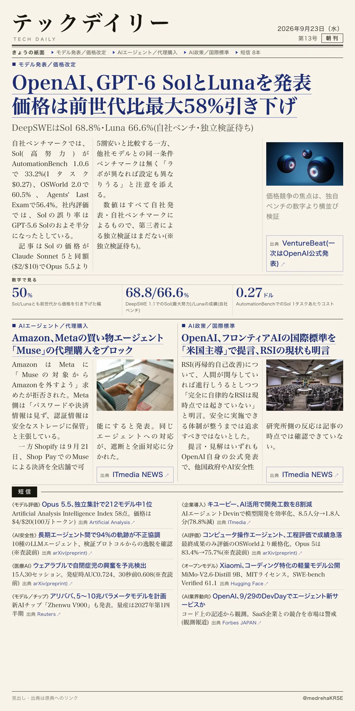

リハ医療デイリー
大腿骨骨折術後の睡眠障害、1か月88.2%から13か月27.8%へ
バーセル指数との関連は多変量調整後も有意 323人の前向きコホート
大腿骨骨折術後、睡眠の質と機能回復の関係を最長13か月追跡した前向きコホート研究。術前に睡眠障害のなかった323人を対象に、ピッツバーグ睡眠質問票(PSQI)とバーセル指数(BI)をのべ1,521回評価した。

テックデイリー
OpenAI、GPT-6 SolとLunaを発表 価格は前世代比最大58%引き下げ
DeepSWEはSol 68.8%・Luna 66.6%(自社ベンチ・独立検証待ち)
OpenAIが9月22日、新モデル「GPT-6 Sol」「GPT-6 Luna」を発表した。価格はSolが100万トークンあたり入力$2/出力$10(前世代の$4/$20から双方向50%引き下げ)、Lunaが$0.10/$0.50(入力50%・出力58.3%引き下げ)。キャッシュ済み入力はさらに90%引きとなる。
